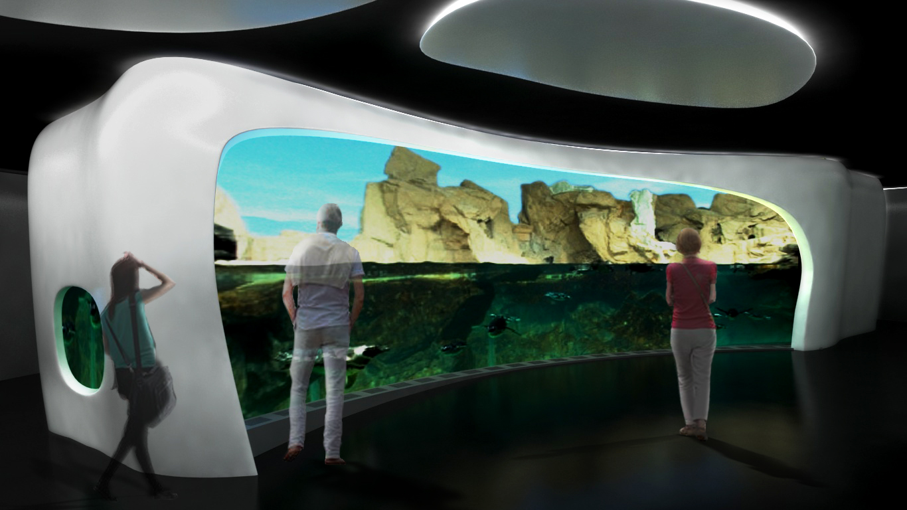
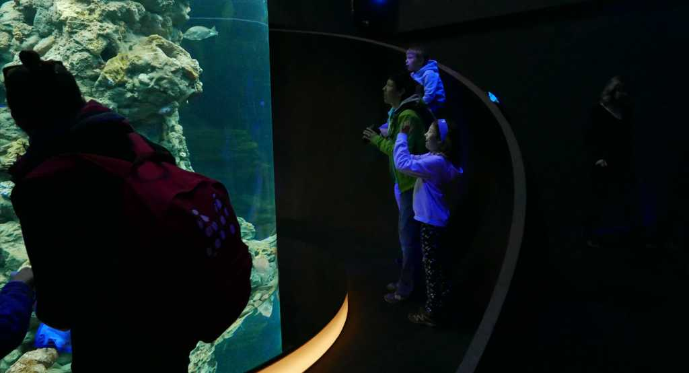
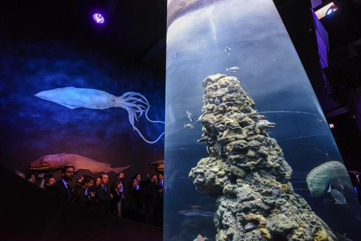
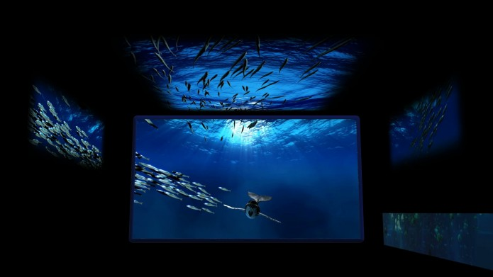
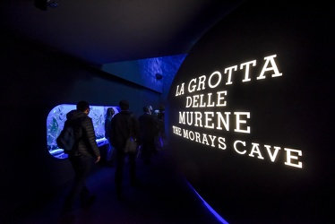

Museums · Genova · 2016
L’Acquario delle
Nuove Meraviglie
Rigenerare un acquario non è un cantiere tecnico: è una riscrittura narrativa. I pesci restano. Cambia il modo in cui il visitatore attraversa la loro vita. La grammatica del teatro italiano — luce, materia, suono — entra nel più grande acquario d'Europa e ne fa un dispositivo emotivo prima ancora che scientifico.
Regenerating an aquarium is not a technical operation: it is a narrative rewriting. The fish remain. What changes is the way visitors cross their life. The grammar of Italian theatre — light, matter, sound — enters the largest aquarium in Europe and turns it into an emotional device before being a scientific one.
Régénérer un aquarium n'est pas un chantier technique : c'est une réécriture narrative. Les poissons restent. Ce qui change, c'est la façon dont le visiteur traverse leur vie. La grammaire du théâtre italien — lumière, matière, son — entre dans le plus grand aquarium d'Europe pour en faire un dispositif émotionnel avant même d'être scientifique.
Cristian Taraborrelli ha curato le scenografie per il progetto di “rigenerazione” di uno dei più grandi acquari del mondo, con la direzione creativa di Alfredo Accatino per Filmmaster Events.
Il progetto ha dato vita a nuovi ambienti narrativi — La Grotta delle Murene, Il Regno dei Ghiacci, Il Pianeta Blu — trasformando ogni sala in un viaggio multisensoriale attraverso gli ecosistemi marini. Un esempio di scenografia immersiva applicata allo spazio museale: non semplice allestimento, ma narrazione spaziale in cui il visitatore diventa parte integrante dell’ambiente.
Cristian Taraborrelli designed the scenography for the “regeneration” project of one of the world’s largest aquariums, under the creative direction of Alfredo Accatino for Filmmaster Events.
The project brought to life new narrative environments — The Moray Eel Grotto, The Kingdom of Ice, The Blue Planet — transforming each hall into a multi-sensory journey through marine ecosystems. A landmark example of immersive scenography applied to museum spaces: not mere installation, but spatial storytelling where the visitor becomes part of the environment itself.
Cristian Taraborrelli a réalisé les décors pour le projet de « régénération » de l’un des plus grands aquariums du monde, sous la direction créative d’Alfredo Accatino pour Filmmaster Events.
Le projet a donné vie à de nouveaux environnements narratifs — La Grotte des Murènes, Le Royaume des Glaces, La Planète Bleue — transformant chaque salle en un voyage multisensoriel à travers les écosystèmes marins. Un exemple emblématique de scénographie immersive appliquée à l’espace muséal : non pas un simple aménagement, mais une narration spatiale où le visiteur fait partie intégrante de l’environnement.
Design Approach
Il progetto si fonda su un principio cardine della scenografia contemporanea: lo spazio non è un contenitore neutro, ma un organismo narrativo. Ogni sala dell’Acquario è stata ripensata come un ambiente sensoriale totale — luce, materia, suono e movimento convergono in un’esperienza immersiva che dissolve il confine tra visitatore e habitat.
La Grotta delle Murene avvolge il pubblico in un’oscurità tattile, dove le superfici organiche e la luce bioluminescente creano un senso di profondità abissale. Il Regno dei Ghiacci traduce il paesaggio artico in architettura scenica: strutture cristalline, riflessi e temperature cromatiche fredde generano un’immersione totale nell’ecosistema polare. Il Pianeta Blu, infine, espande lo sguardo verso l’orizzonte oceanico con superfici specchianti e proiezioni dinamiche che rendono lo spazio infinito.
The project is rooted in a core principle of contemporary scenography: space is not a neutral container, but a narrative organism. Each hall of the Aquarium was reimagined as a total sensory environment — light, material, sound and movement converge in an immersive experience that dissolves the boundary between visitor and habitat.
The Moray Eel Grotto wraps the audience in tactile darkness, where organic surfaces and bioluminescent light create an abyssal sense of depth. The Kingdom of Ice translates the Arctic landscape into scenic architecture: crystalline structures, reflections and cold chromatic temperatures generate total immersion into the polar ecosystem. The Blue Planet, finally, expands the gaze toward the oceanic horizon with mirrored surfaces and dynamic projections that render the space infinite.
Le projet repose sur un principe fondamental de la scénographie contemporaine : l’espace n’est pas un conteneur neutre, mais un organisme narratif. Chaque salle de l’Aquarium a été repensée comme un environnement sensoriel total — lumière, matière, son et mouvement convergent dans une expérience immersive qui dissout la frontière entre le visiteur et l’habitat.
La Grotte des Murènes enveloppe le public dans une obscurité tactile, où les surfaces organiques et la lumière bioluminescente créent un sentiment de profondeur abyssale. Le Royaume des Glaces traduit le paysage arctique en architecture scénique : structures cristallines, reflets et températures chromatiques froides génèrent une immersion totale dans l’écosystème polaire. La Planète Bleue, enfin, étend le regard vers l’horizon océanique avec des surfaces miroitantes et des projections dynamiques qui rendent l’espace infini.
Gallery





Video
L'Acquario di Genova — Il più grande d'Europa
L'Acquario di Genova è stato inaugurato nel 1992 in occasione delle celebrazioni colombiane (i 500 anni della scoperta dell'America), su progetto architettonico di Renzo Piano. Si trova nella cornice del Porto Antico, anch'essa firmata da Piano nel grande progetto di rigenerazione urbana che ha trasformato la Genova della costa industriale dismessa in una delle più visitate città portuali del Mediterraneo. Con i suoi 70 vasche, oltre 12.000 esemplari di 600 specie diverse, è oggi il più grande acquario d'Europa per superficie espositiva e il principale attrattore turistico-culturale della Liguria.
Nel 2016, dopo oltre vent'anni di attività, l'istituzione lancia il progetto Regeneration: un rinnovo del percorso di visita pensato non come ristrutturazione tecnica ma come riscrittura narrativa. L'incarico va a Filmmaster Events sotto la direzione creativa di Alfredo Accatino, che chiama Cristian Taraborrelli per la scenografia. La sfida è mantenere intatte le vasche degli animali (il vero protagonista) e ridisegnare interamente gli spazi di transizione, le sale narrative, gli ambienti di attesa: un teatro che accompagna le creature marine senza mai sostituirle.
The Aquarium of Genoa was inaugurated in 1992 for the Columbian celebrations (the 500 years since the discovery of America), to an architectural design by Renzo Piano. It sits within the Porto Antico framework, also signed by Piano in the great urban regeneration project that turned Genoa's decommissioned industrial coast into one of the most visited port cities in the Mediterranean. With its 70 tanks, over 12,000 specimens of 600 different species, it is today the largest aquarium in Europe by exhibition area and Liguria's main tourist-cultural attraction.
In 2016, after more than twenty years of activity, the institution launches the Regeneration project: a renewal of the visit path conceived not as technical refurbishment but as narrative rewriting. The commission goes to Filmmaster Events under Alfredo Accatino's creative direction, who calls Cristian Taraborrelli for scenography. The challenge is to leave the animal tanks intact (the true protagonists) and entirely redesign the transition spaces, narrative rooms, waiting environments: a theatre that accompanies marine creatures without ever replacing them.
L'Aquarium de Gênes a été inauguré en 1992 pour les célébrations colombiennes (les 500 ans de la découverte de l'Amérique), sur un projet architectural de Renzo Piano. Il s'inscrit dans le cadre du Porto Antico, également signé Piano dans le grand projet de régénération urbaine qui a transformé la côte industrielle désaffectée de Gênes en l'une des villes portuaires les plus visitées de la Méditerranée. Avec ses 70 bassins, plus de 12 000 spécimens de 600 espèces différentes, il est aujourd'hui le plus grand aquarium d'Europe par surface d'exposition et la principale attraction touristique-culturelle de la Ligurie.
En 2016, après plus de vingt ans d'activité, l'institution lance le projet Regeneration : un renouvellement du parcours de visite conçu non comme une rénovation technique mais comme une réécriture narrative. La commande va à Filmmaster Events sous la direction créative d'Alfredo Accatino, qui appelle Cristian Taraborrelli pour la scénographie. Le défi est de laisser intacts les bassins des animaux (les véritables protagonistes) et de redessiner entièrement les espaces de transition, les salles narratives, les environnements d'attente : un théâtre qui accompagne les créatures marines sans jamais les remplacer.
I Collaboratori
Direzione Creativa
Alfredo Accatino
Direttore creativo, autore e saggista, attuale executive creative director di Filmmaster Events. Ha firmato la regia di numerose grandi cerimonie internazionali e progetti culturali a scala europea. La sua collaborazione con Cristian Taraborrelli è una linea costante per gli interventi experience-based dello studio (Acquario di Genova, Città dei Bambini), in cui l'idea narrativa precede sempre il dispositivo tecnico.
Coordinamento Contenuti
Adriano Martella
Curatore scientifico-narrativo del progetto. Ha lavorato sul testo di sala, sui pannelli interpretativi, sulle didascalie multilingua, garantendo coerenza fra rigore biologico e linguaggio drammaturgico.
Project Management
Anna Montorsi
Project manager della produzione integrata: coordinamento Filmmaster, fornitori scenotecnici, lavorazioni in loco. La complessità logistica del cantiere all'interno di un acquario funzionante richiedeva un coordinamento di tipo cantieristico-museale ad alta precisione.
Sound Design
Diego Maggi · Gianmaria Serranò
Compositori e sound designer, autori della partitura sonora che accompagna ogni sala del percorso: ambient subacqueo per la Grotta delle Murene, drone glaciale per il Regno dei Ghiacci, musica oceanica per il Pianeta Blu. Il loro lavoro fa del suono un quarto pilastro della scenografia.
Creative Direction
Alfredo Accatino
Creative director, author and essayist, currently executive creative director of Filmmaster Events. He has signed several major international ceremonies and European-scale cultural projects. His collaboration with Cristian Taraborrelli is a constant line for the studio's experience-based work (Aquarium of Genoa, Città dei Bambini), in which the narrative idea always precedes the technical device.
Content Coordination
Adriano Martella
Scientific-narrative curator of the project. He worked on hall texts, interpretive panels and multilingual captions, ensuring coherence between biological rigour and dramaturgical language.
Project Management
Anna Montorsi
Project manager of the integrated production: Filmmaster coordination, set-tech suppliers, on-site works. The logistical complexity of a worksite inside a functioning aquarium required high-precision construction-museum coordination.
Sound Design
Diego Maggi · Gianmaria Serranò
Composers and sound designers, authors of the sonic score that accompanies every hall of the path: underwater ambient for the Moray Eel Grotto, glacial drone for the Kingdom of Ice, oceanic music for the Blue Planet. Their work makes sound the fourth pillar of the scenography.
Direction Créative
Alfredo Accatino
Directeur créatif, auteur et essayiste, actuel executive creative director de Filmmaster Events. Il a signé de nombreuses grandes cérémonies internationales et projets culturels à l'échelle européenne. Sa collaboration avec Cristian Taraborrelli est une ligne constante pour les interventions experience-based du studio (Aquarium de Gênes, Città dei Bambini), où l'idée narrative précède toujours le dispositif technique.
Coordination de contenu
Adriano Martella
Curateur scientifique-narratif du projet. Il a travaillé sur les textes de salle, les panneaux interprétatifs, les légendes multilingues, assurant la cohérence entre rigueur biologique et langage dramaturgique.
Gestion de projet
Anna Montorsi
Project manager de la production intégrée : coordination Filmmaster, fournisseurs scénotechniques, travaux sur site. La complexité logistique d'un chantier à l'intérieur d'un aquarium en fonctionnement nécessitait une coordination chantier-muséale de haute précision.
Création sonore
Diego Maggi · Gianmaria Serranò
Compositeurs et sound designers, auteurs de la partition sonore qui accompagne chaque salle du parcours : ambient sous-marin pour la Grotte des Murènes, drone glaciaire pour le Royaume des Glaces, musique océanique pour la Planète Bleue. Leur travail fait du son le quatrième pilier de la scénographie.
Lettura critica — Lo spazio museale come dispositivo narrativo
Per due secoli il museo ha avuto un’ortodossia precisa: la vetrina. Tassonomia ottocentesca, didascalia neutra, distanza protettiva fra pubblico e oggetto. Lo spettatore guarda; lo specialista spiega. Il rovesciamento arriva nel 1969 quando Frank Oppenheimer apre l’Exploratorium a San Francisco e dichiara che l’istituzione non è più nel mestiere di spiegare le cose ma di permettere alle persone di capire. Da quel momento il museo cambia statuto: diventa esperienza, attraversamento, soglia.
L’Acquario di Genova è un caso speciale. Renzo Piano, nel 1992, ne aveva già fatto un’architettura-spettacolo: la nave museale ormeggiata al Porto Antico era essa stessa scenografia urbana, atto pubblico di rigenerazione. Il pesce, qui, non è un esemplare in formalina: è un essere vivente che si muove, mangia, dorme. La domanda che il 2016 pone è allora di un’altra natura: come si fa scenografia attorno a creature che sono già spettacolo vivente? La risposta di Cristian Taraborrelli ribalta il problema. Non si gareggia con la murena. Si costruisce il respiro attorno a lei: la grotta tattile, l’oscurità bioluminescente, il drone glaciale che annuncia il Regno dei Ghiacci, il riflesso oceanico del Pianeta Blu. Il dispositivo è teatrale ma rovesciato: il pubblico entra in scena, la scena lo accoglie, l’animale recita sé stesso.
In questa traduzione, Cristian porta dentro l’Acquario la grammatica appresa da vent’anni di teatro italiano: l’uso ronconiano dello spazio come campo magnetico, la luce-pensiero della tradizione strehleriana, la materia-soglia dei Magazzini di Federico Tiezzi. Niente di tutto questo era previsto nel manuale del museum design. Eppure funziona, perché lo statuto del visitatore cambia: non è più lo studente che decifra una targhetta, è il personaggio che entra in una drammaturgia spaziale e ne esce trasformato.
Il riconoscimento BEA 2016 «Best Educational Event» non è una semplice medaglia di settore: è il momento in cui l’industria italiana degli eventi — non quella dei musei tradizionali — certifica che la scenografia teatrale ha un futuro fuori dal teatro. Da qui parte la traiettoria che porterà lo studio alla Città dei Bambini di Genova nel 2022 (BEA 2023 Oro), all’Italia in Miniatura nel 2020, al Regno di Natale al LunEur. La grammatica è sempre la stessa: portare un sapere fuori dal proprio recinto e farlo respirare in piazza.
For two centuries the museum had a precise orthodoxy: the vitrine. Nineteenth-century taxonomy, neutral caption, protective distance between visitor and object. The visitor looks; the specialist explains. The reversal arrives in 1969 when Frank Oppenheimer opens the Exploratorium in San Francisco and declares that the institution is no longer in the business of explaining things but of allowing people to understand. From that moment the museum changes status: it becomes experience, crossing, threshold.
The Aquarium of Genoa is a special case. Renzo Piano, in 1992, had already made it an architecture-as-spectacle: the museum-ship moored at the Old Port was itself urban scenography, a public act of regeneration. The fish, here, is not a formaldehyde specimen: it is a living being that moves, eats, sleeps. The question 2016 poses is therefore of another kind: how does one build scenography around creatures that are already living spectacle? Cristian Taraborrelli's answer overturns the problem. One does not compete with the moray eel. One builds the breath around it: the tactile grotto, the bioluminescent darkness, the glacial drone announcing the Kingdom of Ice, the oceanic reflection of the Blue Planet. The device is theatrical but reversed: the public enters the stage, the stage receives them, the animal performs itself.
In this translation, Cristian brings into the Aquarium the grammar learned from twenty years of Italian theatre: Ronconi's use of space as magnetic field, Strehler's tradition of light-as-thought, the matter-as-threshold of Federico Tiezzi's Magazzini. None of this was foreseen in the museum-design manual. Yet it works, because the visitor's status changes: no longer the student decoding a label, but the character entering a spatial dramaturgy and emerging transformed.
The BEA 2016 «Best Educational Event» recognition is not merely a sectoral medal: it is the moment when the Italian events industry — not the traditional museum world — certifies that theatrical scenography has a future outside the theatre. From here departs the trajectory that will lead the studio to the City of Children in Genoa in 2022 (BEA 2023 Gold), to Italia in Miniatura in 2020, to the Kingdom of Christmas at LunEur. The grammar is always the same: to take a knowledge out of its enclosure and let it breathe in the public square.
Pendant deux siècles, le musée a eu une orthodoxie précise : la vitrine. Taxonomie du XIXe, légende neutre, distance protectrice entre visiteur et objet. Le renversement arrive en 1969 quand Frank Oppenheimer ouvre l'Exploratorium à San Francisco et déclare que l'institution n'est plus dans le métier d'expliquer les choses mais de permettre aux gens de comprendre. Dès lors, le musée change de statut : il devient expérience, traversée, seuil.
L'Aquarium de Gênes est un cas particulier. Renzo Piano, en 1992, en avait déjà fait une architecture-spectacle : le musée-navire amarré au Vieux-Port était lui-même scénographie urbaine, acte public de régénération. Le poisson, ici, n'est pas un spécimen dans le formol : c'est un être vivant qui bouge, mange, dort. La question que pose 2016 est donc d'une autre nature : comment fait-on de la scénographie autour de créatures qui sont déjà spectacle vivant ? La réponse de Cristian Taraborrelli renverse le problème. On ne rivalise pas avec la murène. On construit le souffle autour d'elle : la grotte tactile, l'obscurité bioluminescente, le drone glaciaire qui annonce le Royaume des Glaces, le reflet océanique de la Planète Bleue. Le dispositif est théâtral mais inversé : le public entre en scène, la scène l'accueille, l'animal joue lui-même.
La reconnaissance BEA 2016 « Best Educational Event » n'est pas une simple médaille sectorielle : c'est le moment où l'industrie italienne des événements — non le monde muséal traditionnel — certifie que la scénographie théâtrale a un avenir hors du théâtre. De là part la trajectoire qui mènera le studio à la Cité des Enfants de Gênes en 2022 (BEA 2023 Or), à Italia in Miniatura en 2020, au Royaume de Noël au LunEur.
Rassegna Stampa
« Filmmaster Events, with the artistic direction of Alfredo Accatino, developed the renovation process of Genoa Aquarium, the biggest in Europe, creating a format based on experiencing and entertainment. » « Filmmaster Events, con la direzione artistica di Alfredo Accatino, ha sviluppato il processo di rinnovamento dell’Acquario di Genova, il più grande d’Europa, creando un format basato sull’esperienza e l’intrattenimento. » « Filmmaster Events, sous la direction artistique d’Alfredo Accatino, a développé le processus de rénovation de l’Aquarium de Gênes, le plus grand d’Europe, en créant un format fondé sur l’expérience et le divertissement. »
— Filmmaster Events · March 2020
Apparato critico
«Non siamo nel mestiere di spiegare le cose. Siamo nel mestiere di permettere alle persone di capire.»
La frase con cui Frank Oppenheimer, fisico statunitense fondatore dell'Exploratorium di San Francisco nel 1969, ha riscritto lo statuto del museo scientifico contemporaneo. Da allora il museo non è più un libro tridimensionale: è un campo di esperienza diretta. Tutta la grammatica edutainment dell'Acquario di Genova nasce, riconosciuta o no, da questo riposizionamento.
«We are not in the business of explaining things. We are in the business of allowing people to understand.»
The sentence with which Frank Oppenheimer, the American physicist who founded the Exploratorium in San Francisco in 1969, rewrote the statute of the contemporary science museum. From then on the museum was no longer a three-dimensional book: it was a field of direct experience. The whole edutainment grammar of the Aquarium of Genoa is born, knowingly or not, from this repositioning.
«Nous ne sommes pas dans le métier d'expliquer les choses. Nous sommes dans celui de permettre aux gens de comprendre.»
La phrase par laquelle Frank Oppenheimer, physicien américain fondateur de l'Exploratorium de San Francisco en 1969, a réécrit le statut du musée scientifique contemporain.
Frank Oppenheimer — Exploratorium, San Francisco, 1969
«L'Acquario non doveva diventare un edificio di vetro e cemento. Doveva diventare una nave: una nave ferma, ormeggiata al porto, che il visitatore percorre dentro, come si percorre un transatlantico nella stiva.»
L'idea di Renzo Piano per l'Acquario di Genova nasce nel 1992 dentro la più vasta riprogettazione del Porto Antico per le Colombiadi. La forma archetipa della nave dichiara fin da subito la natura narrativa dell'edificio: il museo è già un viaggio prima ancora che ci si entri. Quando Cristian Taraborrelli è chiamato nel 2016 a riscriverne gli interni, eredita questa premessa archetipa e la moltiplica per ogni sala.
«The Aquarium was not to become a building of glass and concrete. It was to become a ship: a still ship, moored at the port, which the visitor walks inside, as one walks an ocean liner in its hold.»
Renzo Piano's idea for the Aquarium of Genoa was born in 1992 within the larger redesign of the Old Port for the Columbian celebrations. The archetypal form of the ship declares from the outset the building's narrative nature: the museum is already a journey before one even enters it. When Cristian Taraborrelli is called in 2016 to rewrite its interiors, he inherits this archetypal premise and multiplies it through each hall.
«L'Aquarium ne devait pas devenir un édifice de verre et de béton. Il devait devenir un navire : un navire immobile, amarré au port, que le visiteur parcourt à l'intérieur.»
L'idée de Renzo Piano pour l'Aquarium de Gênes naît en 1992 au sein de la plus vaste reconception du Vieux-Port pour les célébrations colombiennes.
Renzo Piano — sui criteri progettuali dell'Acquario di Genova, 1992
«Filmmaster Events, con la direzione artistica di Alfredo Accatino, ha sviluppato il processo di rinnovamento dell'Acquario di Genova, il più grande d'Europa, creando un format basato sull'esperienza e sull'intrattenimento. La grotta delle murene, il regno dei ghiacci, il pianeta blu sono diventati ambienti narrativi che trasformano la visita in un percorso multisensoriale.»
«Filmmaster Events, with the artistic direction of Alfredo Accatino, developed the renovation process of Genoa Aquarium, the biggest in Europe, creating a format based on experience and entertainment. The Moray Eel Grotto, the Kingdom of Ice, the Blue Planet have become narrative environments that transform the visit into a multi-sensory path.»
«Filmmaster Events, sous la direction artistique d'Alfredo Accatino, a développé le processus de rénovation de l'Aquarium de Gênes, le plus grand d'Europe, créant un format fondé sur l'expérience et le divertissement.»
Filmmaster Events — comunicato stampa istituzionale, marzo 2020
«BEA 2016 — Best Educational Event. L'Acquario delle Nuove Meraviglie. Il progetto di rinnovamento del percorso espositivo dell'Acquario di Genova, sviluppato da Filmmaster Events, ha trasformato la visita in un'esperienza multisensoriale di alto valore divulgativo, riconosciuta dal pubblico e dalla critica come modello di riferimento per l'edutainment scientifico in Italia.»
«BEA 2016 — Best Educational Event. L'Acquario delle Nuove Meraviglie. The redesign of the visit path at Genoa Aquarium, developed by Filmmaster Events, transformed the visit into a multi-sensory experience of high educational value, recognized by audience and critics as a benchmark for scientific edutainment in Italy.»
«BEA 2016 — Best Educational Event. La reconception du parcours de l'Aquarium de Gênes par Filmmaster Events a transformé la visite en une expérience multisensorielle, devenue référence pour l'edutainment scientifique en Italie.»
BEA — Best Event Awards, motivazione del premio «Best Educational Event» 2016
Tags